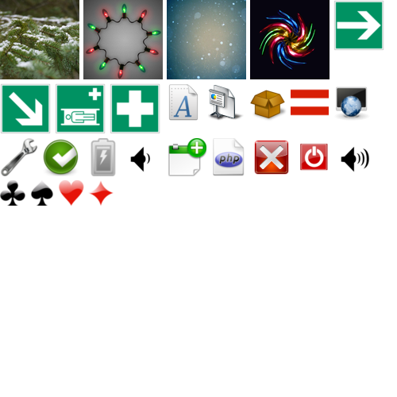

Simple Usage
Create an instance from SpritePacker class and add your images.
$spriteDirectory = 'images/sprites';
$spritePacker = new SpritePacker();
$spritePacker->addFromDir($spriteDirectory);
$spritePacker->run();
With this, a 500x500px atlas will be generated under atlas/atlas.png with the corresponding css atlas/atlas.css.
